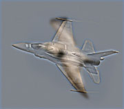

CS 143 / Project 1 / Image Filtering and Hybrid Images
Hybrid image is generated by two steps. First we need to create a low-pass version of image1, a high-pass version of image2, then we need to add them together. In order to achieve ideal results, I experimented with different gaussian filters when filtering the images.
Filtering
In order to deal with the pixels near image edges, I padded the original image with black pixels around its edges according to size of filter. Then I applied the filter on each pixel, calculating different color channels separately, to get the filtered image.
function output = my_imfilter(image, filter)
filter_rows = size(filter, 1);
filter_cols = size(filter, 2);
half_filter_rows = floor(filter_rows/2);
half_filter_cols = floor(filter_cols/2);
image_rows = size(image, 1);
image_cols = size(image, 2);
image_channels = size(image, 3);
image = padarray(image, [half_filter_rows, half_filter_cols]);
output = zeros(image_rows, image_cols, image_channels);
for channel = 1:image_channels
for row = 1:image_rows
for col = 1:image_cols
output(row, col, channel) = sum(sum(image(row:row+filter_rows-1, col:col+filter_cols-1, channel) .* filter));
end
end
end
Merging
There are two things to consider when generating hybrid images. First, when we get two images, we need to decide the image that we get high frequencies from, and the image to get low frequencies from, so that the final result is desirable. Second, we need to control the parameters used to generate gaussian filter. In order to do this, I tried different cutoff_frequency under the two options for each pair of images.


As an example, 20 hybrid images of plane and bird are generated as above. The first ten hybrid images are generated by getting low frequencies from bird, while the last ten hybrid images are generated by getting low frequencies from plane. The cutoff_frequency increases for each set of hybrid images, from left to right, top to bottom, 1 to 10.
After observation, we can see that extracting low frequencies from bird with cutoff_frequency around 5 can produce a reasonable hybrid image.
Result
These are some hybrid image results of my project1.